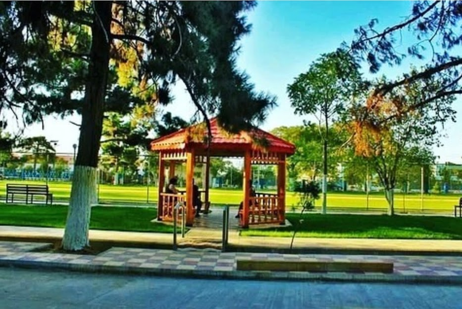
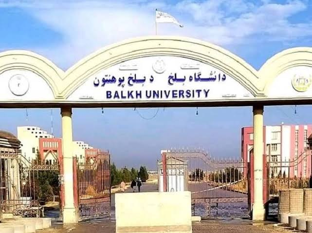
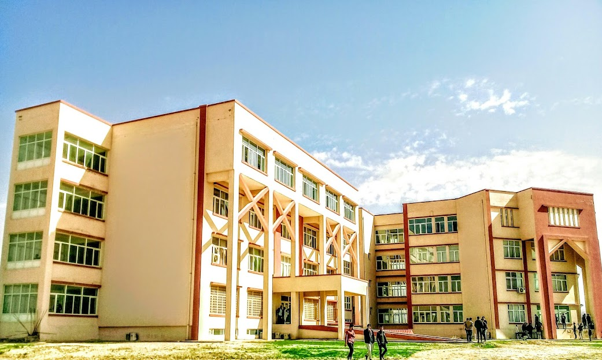

درباره دانشگاه بلخ
  دانشگاه بلخ یکی از نهادهای علمی و تحصیلی پیشتاز در شمال افغانستان است که با رسالت ارتقاء سطح علمی، فرهنگی
و تخنیکی جامعه، در خدمت آموزش عالی کشور قرار دارد. این دانشگاه در سال 1366 در شهر مزار شریف، مرکز ولایت بلخ،
تأسیس شد و از آن زمان تاکنون، بهعنوان یکی از معتبرترین مراکز تحصیلات عالی در افغانستان شناخته میشود.
دانشگاه بلخ با دارا بودن چندین دانشکده فعال از جمله: دانشکده طب، انجنیری، حقوق و علوم سیاسی، اقتصاد، تعلیم و
تربیه، ادبیات و علوم انسانی، زراعت، و کمپیوتر ساینس، فرصتهای آموزشی متنوعی را برای هزاران دانشجو در سطح
لیسانس و تحصیلات بالاتر فراهم میسازد.
کادر علمی مجرب، لابراتوارهای مجهز، کتابخانههای غنی، محیط آموزشی سالم، و تمرکز بر تحقیق و نوآوری، از جمله عوامل
موفقیت این دانشگاه محسوب میشوند. دانشگاه بلخ همچنین در راستای رشد علمی و تعامل جهانی، با نهادهای علمی و
دانشگاههای معتبر داخلی و بینالمللی همکاری مینماید.
هدف اصلی دانشگاه بلخ، تربیت نسلی باسواد، متعهد و توانمند است که بتواند نقش مؤثری در توسعه علمی، اجتماعی و
اقتصادی کشور ایفا نماید. این دانشگاه در کنار آموزش، بر پرورش تفکر انتقادی، ارزشهای انسانی، و مسئولیتپذیری
اجتماعی نیز تأکید دارد.
دانشگاه بلخ با نگاهی به آینده، همواره در تلاش است تا با بهبود کیفیت آموزشی، گسترش پژوهشهای علمی، و
فراهمسازی محیطی علمی و فرهنگی، سهم شایستهای در پیشرفت افغانستان ایفا کند.
اگر به دنبال یک محیط علمی پویا، آموزش با کیفیت، و فرصتهای واقعی برای رشد فردی و تخصصی هستید، دانشگاه بلخ
میتواند نقطهی آغاز مسیر علمی شما باشد. ما باور داریم که آینده از آنِ کسانی است که امروز برای آن سرمایهگذاری
میکنند، و دانشگاه بلخ آماده است تا همراه و پشتیبان این مسیر باشد.
برای کسب اطلاعات بیشتر در مورد رشتهها، شرایط پذیرش، برنامههای آموزشی، بورسیهها و سایر خدمات دانشگاه، از
بخشهای مختلف وبسایت دیدن فرمایید یا مستقیماً با بخش پذیرش تماس بگیرید. تیم پذیرش ما با افتخار آماده
پاسخگویی به پرسشهای شما و راهنمایی در مسیر ثبتنام میباشد.
📞شماره تماس بخش پزیرش: 93700001234+
📧 ایمیل آدرس بخش پزیرش: admision@blku.edu.af
🌐 یا به صفحه پزیرش ما مراجعه کند.